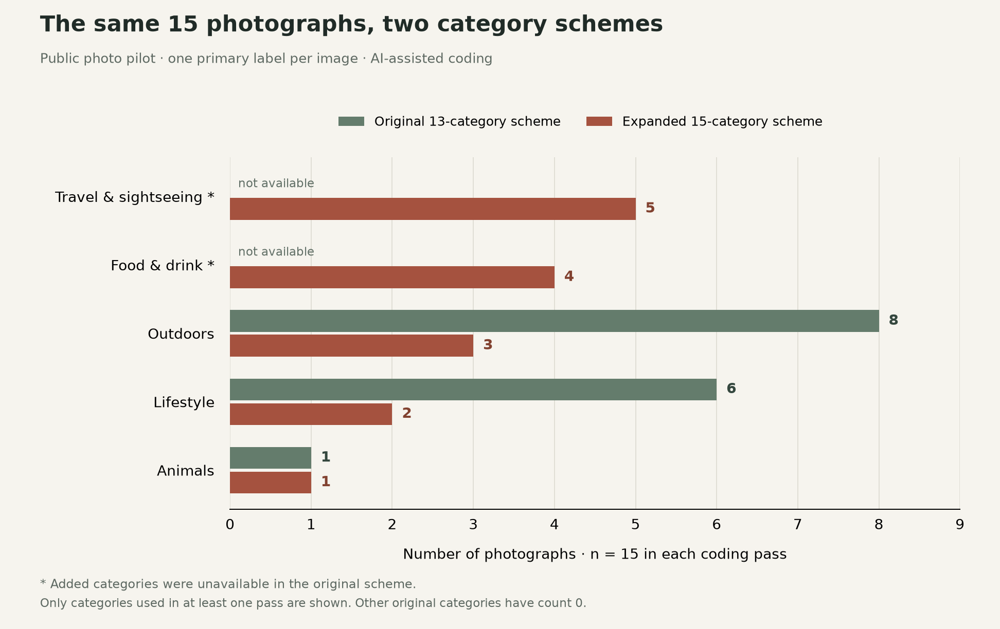

Week 6 — Same photos, different labels.
Try the classification lab →
Download the fifteen-photo coding record · Get the blank Excel record sheet
Starting with something I can check
This week’s task asks how platforms come to “know” us through data. Before collecting friends’ posts, I wanted a smaller example where the source and the coding decisions could stay visible. The starting material was my own photo journal: the first five photos in each of its three chapters, giving fifteen in total.
That’s a deliberately balanced sample of an already selected collection. It isn’t my fifteen latest social media posts, and it doesn’t stand in for thirty-two people. Even before choosing categories, I’ve made the sample look a certain way by including the same number of photos from Wales, Leeds and everyday life. Similar coastal and window views also stay in the sample because I followed the first-five rule, rather than choosing fifteen different subjects.
Where the labels get awkward
The first pass uses the thirteen categories in the workshop instructions, with one category per photo. The rule is to code the main visible subject, using the existing caption for context. That gives eight “Outdoors”, six “Lifestyle” and one “Animals”. The other categories have zero in this sample.
Some decisions are less obvious than those numbers look. A plush toy goes under “Lifestyle”, not “Animals”. Dinner by a window goes under “Lifestyle” because the meal is the main subject, even though there’s a city view behind it. The coding record keeps an alternative label and a reason beside each choice, so a reader can disagree with it.
There are no photos coded as “Work”. That clearly doesn’t mean I never study or work. It means this little selection doesn’t show it. This is the part I need to remember when a chart starts looking like a description of a whole person.
Changing the categories, keeping the photos
The second pass adds “Travel & sightseeing” and “Food & drink”. Everything else stays the same: the fifteen photos, their captions and the one-category rule. The five Welsh-coast images now go into travel, while four food and drink images leave the broad lifestyle category.
Nine of the fifteen labels change. The new totals are five travel, four food and drink, three outdoors, two lifestyle and one animals. Nothing about the photos changed; the available boxes did. The second version is more specific for this collection, but I still wouldn’t call it the true version of my identity.

What this says about being “known” online
Cheney-Lippold’s explanation of algorithmic identity helps here: data about someone gets interpreted, rather than simply revealing who they are. In his NYU Press interview, he describes how these interpretations can change as new data arrives. My small example shows one reason to question a label: its meaning depends on the rules used to produce it.
I’m choosing both the pictures and the coding rules here. A platform could be working with other information and a different purpose. This experiment can show how a classification changes; it can’t tell me what a real platform has inferred about me, or explain its hidden algorithm. I still need to look at an actual advertising profile for that part of the exercise, and even that screen will only show part of the process.
Making the next step easier
The record tool has thirty-two anonymous IDs and fifteen slots for each person. It counts a post only after it has one category. A person stays out of the two-category scatter plot until all fifteen posts are coded, so a missing record doesn’t quietly become a zero. The Excel sheet provides another way to keep the counts.
For the full task, I’ll need to record the collection date and sampling rule, keep the thirteen original categories for the first pass, and make notes when a post could fit more than one. I’ll also keep names, account handles and private post details out of the public portfolio. Anonymous numbers alone wouldn’t make a recognisable screenshot private.
The next useful comparison is between a description I choose for myself and the categories a platform actually shows me. For now, the result is narrower: a clear example of how much a classification can change before the underlying material changes at all.
Materials and references
- University of Leeds, COMM5780M. “Identity, Algorithmic Identity, and Data” workshop task. The input/output/process structure, thirty-two × fifteen exercise and thirteen starting categories come from this guide. University sign-in required; checked 7 November 2026.
- Cheney-Lippold, J. (2017). “An Interview with John Cheney-Lippold, Author of We Are Data”. NYU Press, 3 May. Used here to think through changing classifications alongside the workshop guide.
- Sumpter, D. (2018). Outnumbered. The classification exercise follows the teaching team’s adaptation of Sumpter’s method, as described in the workshop instructions.
- Source material: fifteen existing images and captions from my public photo journal, sampled and coded on 7 November 2026. These are photographs in a curated portfolio, not observed social media posts.